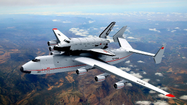

ЗИТ – една Велика „Стара“ история от Иван Стамболийски за младите
Работя в ЗИТ от 1973 г. – като млад инженер по ИТ – настройчик на ЕИМ, сервизен инженер, началник цех, началник производство, производствен директор, директор изчислителен център, изпълняващ длъжността „Директор“ от 1985 г. до разпродажба на завода. От всички места съм виждал ЗИТ.инж. Иван стамболийски Ще започна от 1973 г., когато видях бъдещия си началник Евгени Дамянов по пижама и с четка за зъби в устата да тича из цеха и ми каза: „Тук се спи момче“. Това беше Великото време за ЗИТ. Отидох при гаджето ми и й казах: „Трябва да се женим ако искаш деца. Тук се спи“. И тя започна да ми носи ядене в месал (тогава нямаше торбички). Това беше времето, когато се внедриха крадените технологии за големи ЕИМ. Но срещу износа на машини и технологии получавахме от СССР (бивша Русия) всичко, което беше необходимо за България в енергетиката – нефт, газ и оръжия. Работеха 1200 инженери и техници. Инженерите ги освобождаваха и от редовна военна служба. ЗИТ имаше цехове за спомагателни производства във Вършец, Поморие и Бобошево - Кюстендилско. Второто преломно време беше 1985 г., когато по редовно купена технология започна внедряване на ЦПУ-та от Фанук. От ЗИТ бяха взети Базата за развитие, най-кадърните специалисти и прехвърлени в „Технотроника“ под ръководството на инж. Радка Мутафова – технически директор и ръководител на Базата и инж. Чолаков – министър, директор А. Бъчваров. Тогава ме назначиха директор в ЗИТ и с много усилия и воля под ръководството на акад. Стоян Марков беше внедрена една оригинална IBM машина ИЗОТ - 1014E. Руснаците не искаха да повярват на очите си, че има такова нещо (нямаше интернет). С паралелния процесор (матричен процесор) беше изстреляна руската совалка „Буран“. ИЗОТ - 1014E работеше във всички важни руски центрове, включително военни и научни. ИЗОТ 1014 се ползваше за управление на Буран По-късно 1990 г. с матричния процесор отидох във фирма на НАСА – FPS и те бяха готови да ни дадат пазара си в Европа, но с гаранция на правителството, че няма да ходят машините в СССР. Този процесор едва се правеше в Китай и се пазаше с калашник на входа на цеха (видял съм го). Тогавашното правителство не се престраши. Роди се и първото българо-американско дружество „ЗИТ – Пертек“ за лентови устройства. Американците имаха такова дружество само с Франция. Друг преломен момент беше, когато в съдружие с „Елмет инженеринг“ (военна фирма), Ирак искаше да купи всички технологии срещу нефт (колкото искаме). Но нямаше кой да подпише договорите 1994г. – 1995г. 1995 г. – 1996 г. се водеха и преговори с фирмите от ЮАР, които трансплантираха първото сърце и имат завод за електромедицинска апаратура. Договорихме да прехвърлят технологиите в ЗИТ, но тогавашния министър на здравеопазването Иван Черноземски не се съгласи да бъде ЗИТ, а те нищо не направиха. Започна планирания глобален упадък на икономиката в България. От обеми 300 млн. долара, започнахме да правим касови апарати, проверка на електромери, със стотина хиляди лева годишно. По време на приватизацията ЗИТ също беше разпродаден, но с много усилия от направените дружества ЗИТ – съответна фирма, която произвеждаше и сега работят успешно, МДК na Митко Димитров, Бимко на Г. Бучков, Валена – на Мето, Пан Сервиз на Ивайло Тодоров, INTECH на Веселин Трифонов, ВКВ-5 на Венчо Велинов, Контракс на Д. Йорданов, Ани-17 на Анелия Иванова, Мис Петра на Иван Стамболийски, ЕТА-17 на Петър Бакалов (от Технотроника), ZIT International на Биляна Николаева (носи и знака на ЗИТ), В. Костов – Инвест на Васил Костов, Валентино на Валя Асенова. Повечето не издържаха на схемата в България. Празните корпуси се напълниха постепенно и сега няма къде да се паркира. Но това не е величието на ЗИТ, когато 1991 г. – 1992 г. ЗИТ кръстиха „Завод за изкупуване на Татри“, за 2 машини ИЗОТ 1014, внесохме 100 товарни Татри, които правителството не можа да договори и много други бартери, като първите персонални компютри от USA фирма, първите западни телевизори, дамски обувки, багери, западни автомобили и други. С инициатива и средства на ЗИТ се „роди“ техникума „Джон Атанасов“, който и сега ражда специалисти и за ЕО. ЗИТ направи първия ведомствен блок като ГД (гражданско сдружение) с тухли по проект от МС, производствени цехове в Бобошево, Вършец, Поморие с хотел, защото тук не стигаха работници. Базата на Щъркелово гнездо, започната от стария директор инж. Ботев, беше за отмора на работниците. Всичко, което се направи в Банско, беше започнато от ЗИТ. Продукцията на ЗИТ се изнасяше не само в Русия, но и в Германия, Чехия, Румъния, Сърбия, Черна гора, Индия, Етиопия, Узбекистан и др. Това е, за да знаят поколенията и че първата изчислителна машина 1967 г. – 1971 г. е направена в ЗИТ по официален лиценз на Фуджицу с името ЗИТ 151 под ръководството на родоначалника на българската ИТ Иван Попов.
